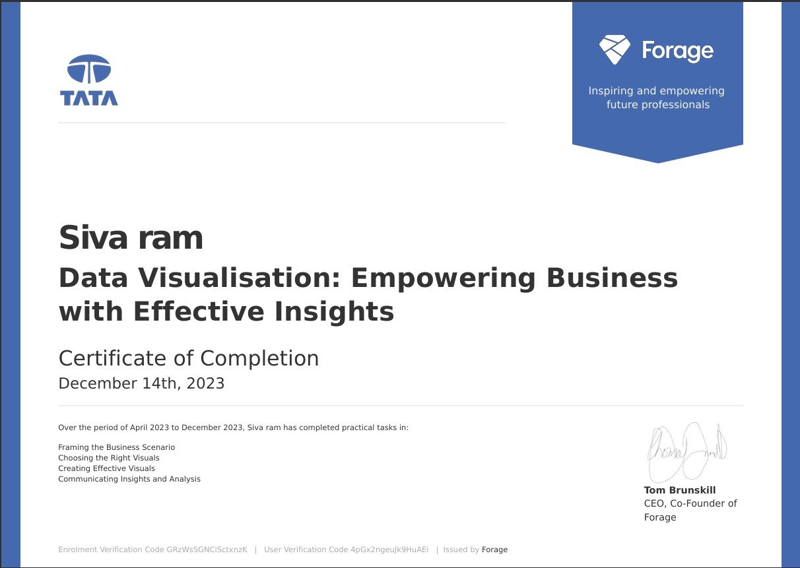
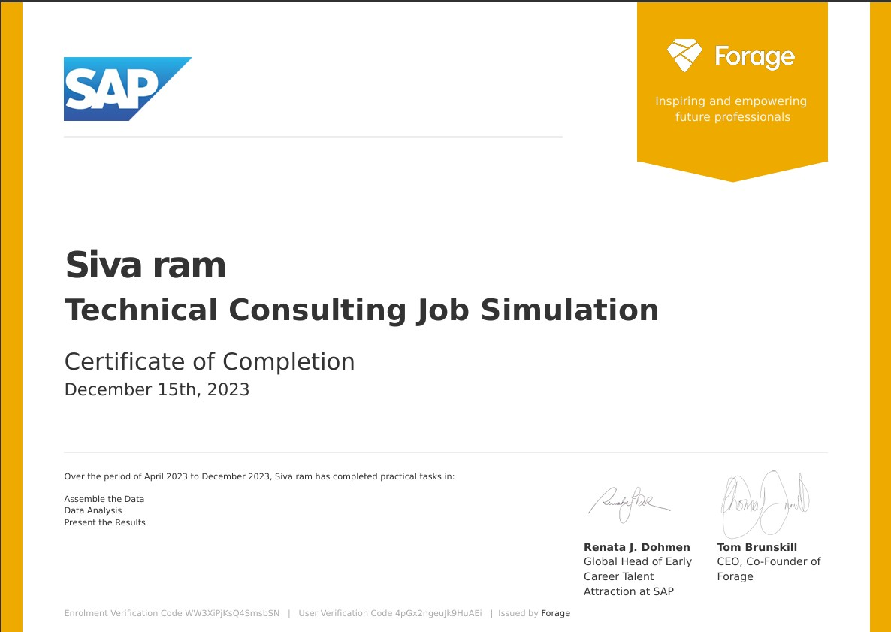

Certifications

SAP Certified Application Associate
Data Analytics & Visualization Job Simulation

Data Visualisation: Empowering Business with Effective Insights

Data Engineer · Business Analyst · Data Analyst · Data Visualization Enthusiast
Turning complex data into scalable pipelines, insightful analytics, and impactful visual stories.
I’m a Business Analytics graduate student with strong skills in Python, SQL, statistics, and data visualization, focused on turning data into actionable business insights. I have hands-on experience building forecasting models, predictive analytics solutions, and KPI dashboards to support data-driven decision-making.
Through my internship experience, I’ve worked on data cleaning, SQL-based analysis, dashboard development, and program impact analysis, building clear and reliable reports using tools such as Looker Studio and Excel to support organizational decision-making.
My academic and personal projects focus on forecasting, predictive modeling, clustering, and exploratory data analysis, including large-scale demand and traffic forecasting and performance analysis projects. These projects have strengthened my ability to apply analytical methods to real-world datasets and translate insights into practical recommendations.
Developed 2025–2030 passenger and traffic forecasts using SQL, Python (Prophet, XGBoost), and Power BI for staffing, scheduling, and congestion management.
Built predictive, clustering, and classification models from 2013–2024 data to identify peak demand periods, carrier trends, and recovery benchmarks.
Analyzed DC–MD–VA hunger data (2014–2015) using Excel to quantify pounds needed, distributed, and unmet. Built KPIs and visuals to identify priority regions.
Developed a low-fidelity virtual reality FPS game prototype to evaluate the impact of display resolution on player performance. The game challenges players to hit uniquely identified targets within a fixed 1.5-minute time limit, with real-time score updates.
Captured detailed player performance metrics—including total score, completion time, and per-target reaction times—in structured JSON format for post-game analysis. This project was completed as part of my bachelor’s thesis published on the DiVA research portal.

